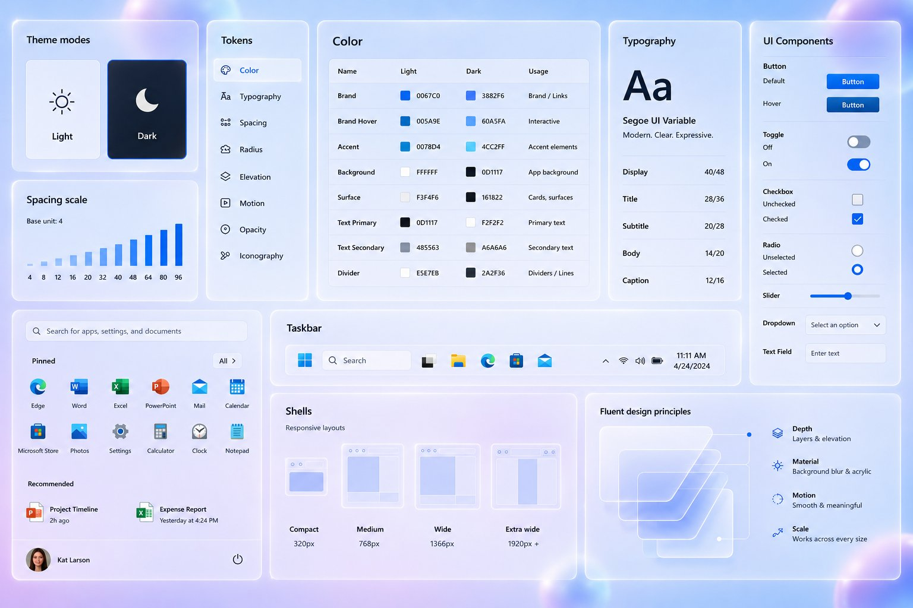
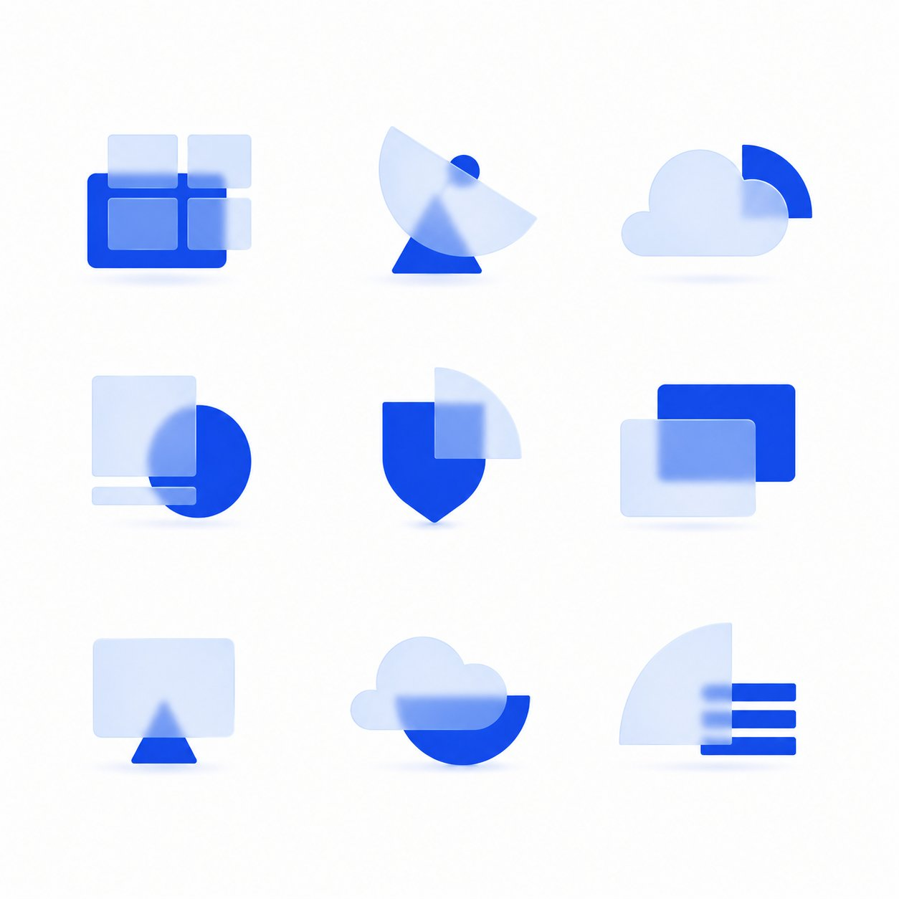
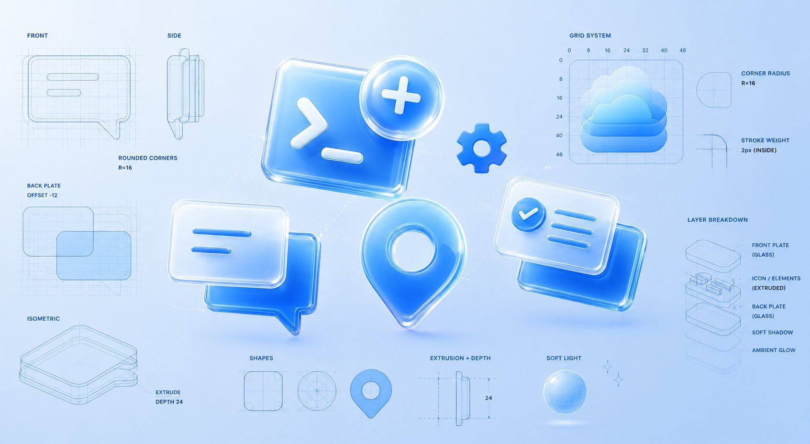
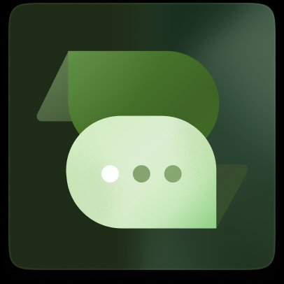
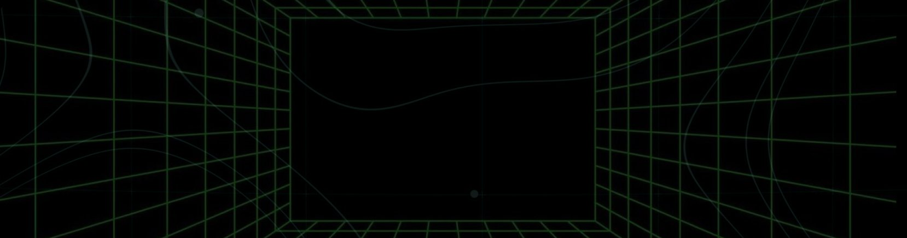
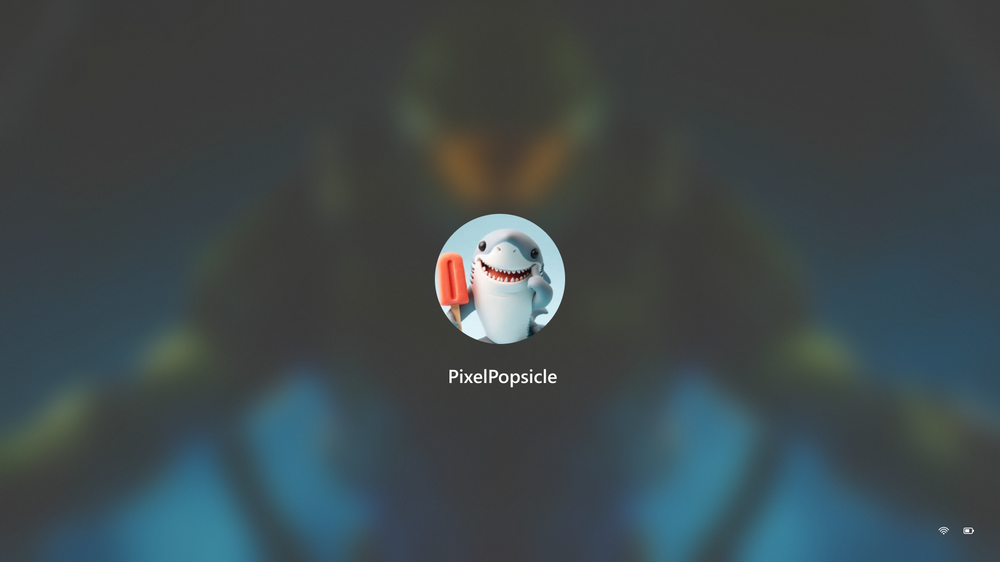
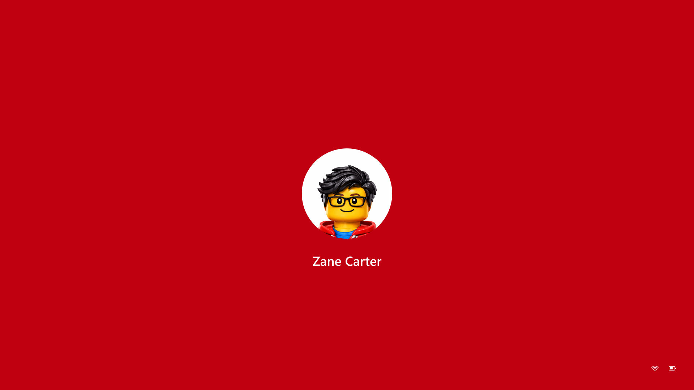

Windows Visual
Systems & Assets
Six connected workstreams inside Windows Design Systems, all pointed at the same problem: how visual language holds its quality when it has to cover more surfaces than any one person can draw by hand.

Windows has more surfaces than any one person can hand-craft, and the quality bar is set at the level of a single corner radius.
Those two facts are in tension, and most of what I build here is an attempt to resolve it. Catch what slips. Make expression generatable without making it generic. Know what is worth keeping when the system gets rebuilt underneath you.
What follows is six workstreams. Some are shipped libraries other teams pull from every day. Some are prototypes arguing a position. They share a color model, a set of tools, and a view about where craft belongs in an automated pipeline.
Marketing Compendiums, and the audit underneath them
Marketing needs assets that are accurate to shipped product, across the full landscape of features and surfaces. That accuracy decays constantly, because product keeps moving and nothing is watching the gap.
So I started auditing the compendium against product's plan of record, surface by surface. The gaps kept turning up, and they were the kind you only catch by looking closely: geometry, material treatment, color, and states that go missing somewhere between design and build. Small individually. Compounding across a landscape this size.
The framing that matters: this was never about cleaning up someone else's work. The system should have caught these and did not. So the response was to build the thing that catches them.
That response is the component, template and screen libraries, plus a pipeline that keeps product-accurate screens and flows synchronized between marketing and product. The audit is a discovery method. It produced documented findings, and those findings changed both the product and the system.
What it became
It stopped being a marketing deliverable. Design Systems and product design partners now pull from the same library, which is not what it was scoped to be and is the more interesting outcome.
- Owned
- Audit method, library architecture, and the sync pipeline between marketing and product surfaces.
- Shared with
- Marketing partners on production scope, product design on plan-of-record accuracy.
- Output
- Component library, template library, screen library, and the compendium itself.
Expressive Assets, or building the thing that makes styles comparable
Every icon in Windows has to hold up across themes, light and dark modes, accent colors, and contrast requirements. Building that matrix by hand is not difficult, it is combinatorially impossible. Automating it naively is worse, because the fastest path produces output that is technically correct and visually dead.
But the harder problem sits before either of those. Nobody knows yet what expression should look like across Windows. That is an open question, and you cannot answer it by looking at three icons. You have to see a direction across the whole family, in every mode, under identical conditions, or you are comparing a good mockup to a bad one instead of comparing two ideas.
So the first real problem was not picking a style. It was building the instrument that makes styles comparable.

What the instrument produces
Default, Flat, Outline, Tinted, Chroma and Acrylic, all driven from a single seed color. These are test directions, not proposals. They exist so the team can see what the range actually looks like before anyone commits, and nothing in them is settled.
Testing is early and has not surfaced much yet. That is a fine place to be when the instrument is the deliverable, and a better answer than a finding I did not have.
The color work
The system runs on OKLCH rather than HSL or LAB. Perceptual uniformity is the whole reason. In HSL, holding lightness constant while rotating hue produces swatches that read as wildly different brightnesses, which means an automated theming pass makes some icons look heavy and others look washed out. OKLCH gives you a lightness value that actually corresponds to perceived lightness, so a generated ramp stays even across the hue wheel.
Underneath that sits a Figma palette and mode system: ten color modes across Base, Chromatic, Accented and Contrasting categories, built on a four-fill subtle tint ramp and six rainbow-ordered base accents.
Accessibility is not a mode you bolt on. High Contrast and Dichromic are generated from the same model as everything else, which is the only way they stay correct as the set grows.
Gallery and Customizer
The Gallery is where the library is browsed. The Customizer is where the team drives it themselves, picks a seed, and sees a direction resolve across the whole family. It is an instrument for making a decision, not a presentation of one already made. Both have been socialized well beyond my own team.
- Owned
- The color model, the instrument itself, the Gallery and the Customizer, plus the plugin and export pipeline.
- Collaborators
- A engineering-minded designer on technical and risk review, and on Windows app icons. My manager on visual direction. Two systems designers on asset anatomy vocabulary and naming.
- Cadence
- Daily updates to the team, with a published library and a shareable status page.
Windows Illustrations
The illustration work spun out of Expressive Assets into its own system. It shares the color role model, and it will share the same contract with the underlying design system, but illustration has its own problems that icons do not.

A shape taxonomy instead of a drawing guide
Three tiers. Base shapes are the backgrounds. Secondary shapes lay over the base and stay movable and scalable. Tertiary shapes are small emblem-like containers, either the element itself or a holder for an icon, and the icons they hold are always system icons.
Structuring it this way is what makes generation possible later. If the pieces are typed, a recipe can assemble them. If the system is just a folder of finished drawings, it cannot.
One asset, both surfaces
The previous approach carried light and dark variants of every illustration. I moved away from that. A single asset now has to land on both, which is a real constraint on palette and contrast and makes the library half the size and considerably easier to keep honest.
The Builder
A generator that composes assets from the shape taxonomy once there are good recipes and foundational elements. The test case I set for it was simple: ask for a concept like "safety" and get three usable options back. It is being built as a Windows-specific mode first, then folded into the wider Expressive Assets builder so both streams can run in parallel.
- Owned
- Style direction, shape taxonomy, pilot asset set, guidelines, and the builder.
- Alongside
- The M365 illustration direction, developed in tandem. Influence rather than instruction, with the goal that the two systems work together rather than diverge.
- Approach
- Twelve interim assets as the pilot. Perfect those, use them to populate the guidelines, then rebuild the back catalog from the simplified principles.
Component libraries, and the gap between a kit and a system
I build and maintain production-aligned Figma libraries. I do not hand these to engineering directly. They go to product design partners who carry them through to implementation, which means the bar is that a designer can build a real screen from them without inventing anything.
That bar is where most component kits fall down. A kit gives you buttons and inputs. A system gives you the compositions people actually need, so nobody has to reassemble the same layout from primitives every time.
The live problem: the new system needs to be at least on par with the visual library it replaces, and in most cases better. Right now it is short on patterns people can take off the shelf and use. Settings is the surface most likely to lack enough base components to compose from.
This is an area I have been pushing on, and the shape of the fix is a component priority list built from where people are actually blocked, rather than from what looks incomplete on a coverage chart.
- Owned
- Marketing-side component and template libraries, and the documentation and adoption workflows around them.
- Contributing to
- Gap analysis and component prioritization on the newer system.
- Principle
- Reusable building blocks first, compositions on top, new components only where composition genuinely cannot get there.
Tooling, which is a means and not the point
None of the systems above survive contact with real scale unless someone builds the thing that operates them. So I build plugins. They are not the achievement, they are what makes the achievement usable by anyone other than me.


What exists
- Icon Palette Builder
- Generates monochromatic palettes from a seed, following the color model rather than eyeballing tints.
- Icon Mode Switcher
- Variable mode management and hex remapping across a library, so a mode change is one operation instead of hundreds.
- Display mode prototype
- Greyscale, monotone, duotone and high-contrast modes, with export-all-modes-as-layers and SVG output.
- Builders
- The Expressive Assets and Illustration builders, plus the export pipeline that gets assets out of Figma and into a usable library.
The unglamorous part
Figma's plugin sandbox is ES5-only, paint proxies are read-only, and instances detach in ways that will quietly ruin a library if you are not watching. A meaningful share of this work is working around those constraints without leaving a mess for whoever maintains it next.
On AI in this work: it accelerated the generation and refactoring passes substantially. It was also confidently wrong about color math more than once, in ways that looked plausible until the output was rendered side by side. The useful posture is to let it draft and to verify everything that touches perceptual values by eye.
Personalization, which is what all of it is for
The systems above are infrastructure. This is the argument they exist to make.
It's still Windows. Now it's mine.
A prototype exploring how Windows could become genuinely personal, rather than personalized in the wallpaper-swap sense. A theme is a complete identity that holds across Start, the Lock screen, widgets and the account surface, and it stays recognizably Windows the whole way through. That second half is the hard part. Anyone can make a skin. Very few can make a skin that does not feel like a costume.

Pushing on distinct visual languages is what stress-tests the model. A theme built around a soft, illustrative property and one built around hard industrial sportswear break a personalization system in completely different places, and finding those breaks is the point of building it.



Why it connects back
Personalization at this level is only affordable if the assets underneath it can be generated. Expressive Assets is what makes a theme more than a wallpaper. The illustration system is what gives it a voice. The component libraries are what keep it from drifting. This stream is the reason the other five are worth doing.
A single question, answered six ways
Every stream here is the same problem viewed from a different angle: how do you hold a quality bar across a surface area that has outgrown hand craft. The audit catches what slips. The color model makes expression generatable. The taxonomy makes illustration composable. The libraries keep it from drifting. The tooling makes it operable by people other than me. The prototype argues why it is worth the trouble.
Most of this was built in the margins of a role scoped to something narrower. That is the part I would change.